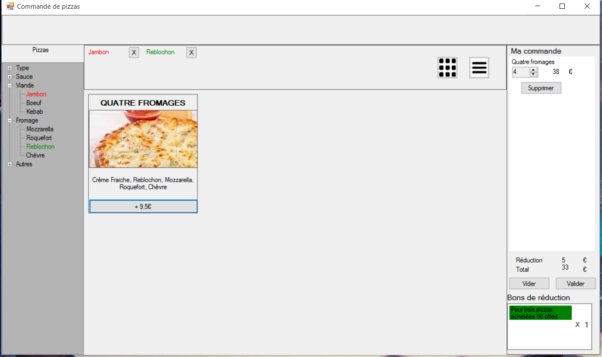

Sébastien Kerbrat
sebastien_kerbrat@msn.com
School projects
FlyHigher - Master 1 (game) (src)

Technologies : Unity with C#
Working with 3 other students, I made a game to teach aeronautics to children from 6 to 10 years old and produced a small paper containing recommandation for creating educational entertainment.
I created two small games, the save management and translation modules and half of the game structure and UI.
Designing, developing and testing the game took about 100 hours of work from each of us including user tests with family and primary schools students.
The Future of Video Consumption - Master 2

For this project, I signed a non disclosure agreement, hence I cannot show the result of our work.
The image above is a moodboard we made to better define what the experience of Daydreaming meant to us.
Technologies : Unity with C#
Working with 3 other students and researchers from the Austrian remote control manufacturer ruwido, we tried to imagine how we could consume videos in the future.
This meant researching what already existed and what was likely to change in the future, then brainstorming to find how it could improve the experience video consumption.
This led us to the experience of Daydreaming : A personal experience that is fully immersive and seamless to enter. Moreover you can daydream where you want, at any time and choose what you want to see.
Then we designed a system that should provide an experience as close as possible to daydreaming, based on an immersive interface to explore a database of videos and new interactions when watching videos.
We iterated several times on these ideas, starting from drawings on a whiteboard and ending with an interactive prototype.
Using this last prototype we conducted tests with 10 users to evaluate the experience and got very positive feedback from them.
ruwido is still working on this project and an improved version of our last prototype could be shown at the IBC Trade Show in September 2016.
Kiviatt Component - Master 2 (jar) (src)

Technologies : Java Swing
A small class project where I created a reusable Java component working with a buddy. We had to use an MVC architecture and I had to do some trigonometry to check which parts of the component should respond to user input.
Pizza Interface - Master 2 (bin) (src) (report in French)
Technologies : Visual Basic
For this project, we designed and created an interface to order pizzas as a team of four. You can filter pizzas using the left side-bar and create your command (there is only one page though).
This project was mostly meant to teach us to think about the design choices we made and how to model user tasks
Thief-Tracker - Master 2 (video) (src)
Technologies : Android
For this project, I created an Android app with a buddy. The app had to detect when the phone would move or when the charger would be unplugged and raise an alarm that a thief shouldn't be able to stop (It wasn't completely possible due to API limitation).
This project was interesting because we had to dig into the Android API and search the internet to see what we would and would not be able to do.
Multimodal Application - Master 2 (video) (src)

Technologies : Java
The goal of this project was to learn how we could integrate multiple software each allowing a different way of interacting into a single application.
- A bus-network allowed the different softwares to communicate
- We used voice-recognition software, we had to configure the words it would be able to recognize and we used it to command our app
- We created gesture recognition module with a configurable dictionary of gestures, we also used it to command our app
- We used a drawing module to create and move shapes according to the previous commands